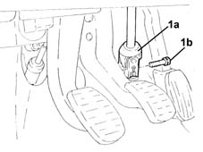
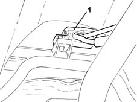
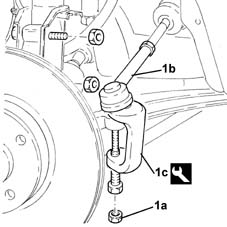
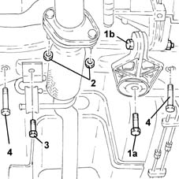
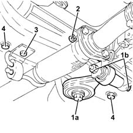
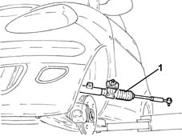
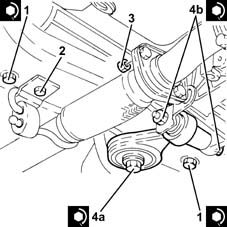
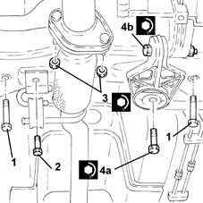
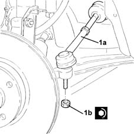
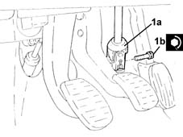

4120A10 steering box - r+r - check wheel tow-in if necessary separately
- Path
- Procedures > 41 STEERING > 4120 STEERING BOX > 4120A rack and pinion steering box > 4120A10 steering box - r+r - check wheel tow-in if necessary separately
- Kind
- repair procedure (removal / refitting; the operation number is the code)
- Applies to
- all engines; all production periods
- Interactive page
- https://sloeber94.github.io/elrnDB-lYpsln/en/#/2429225
Applies to: all engines; all production periods
 Removing
Removing
 Refitting
RefittingPosition the vehicle on the ramp.
1. Release the steering column universal joint (1a) undoing the bolt (1b) fixing it to the steering box.

Applies to: all engines; all production periods
Proceed with removal 4450B12 front or rear wheels (two) - r+r .
1. Release the gear selector and engagement cables from the fastening on the steering box.

Applies to: all engines; all production periods
1. Undo the nut (1a) and disconnect the track rods (1b) from the steering knuckles usiing the tool (1c).
 | Name | Country |
|---|---|---|
1c | Extractor | 1.871.000.700 |

Applies to: engines: 1.2 8v, 1.2 16v, 1.4 16v; all production periods
1. Undo the bolt (1a) and loosen the bolt (1b) fixing the power unit lower reaction rod.
2. Undo the nuts fixing the exhaust manifold and catalytic converter to the exhaust silencer.
3. Undo the bolt fixing the exhaust pipe mounting bracket to the front suspension crossmember.
4. Undo the bolts fixing the steering box to the front suspension crossmember.

Applies to: engines: 1.3 JTD; all production periods
1. Undo the bolt (1a) and loosen the bolt (1b) fixing the power unit lower reaction rod.
2. Tighten the nuts fastening the rigid section of the exhaust pipe between the catalytic converter and the silencer, silencer side.
3. Undo the bolt fixing the exhaust pipe mounting bracket to the front suspension crossmember.
4. Undo the bolts fixing the steering box to the front suspension crossmember.

Applies to: engines: 1.3 JTD; all production periods
Lift the steering box and rotate it downwards to release the rib from the duct in the bodyshell.
1. Remove the steering box via the left front wheel arch.

Applies to: all engines; all production periods
Refitting
RemovingPlace the steering box in its housing.
Applies to: engines: 1.3 JTD; all production periods
1. Tighten the bolts fixing the steering box to the front suspension crossmember to the recommended torque.
 | Fastening | Component | Ø | Value (daNm) |
|---|---|---|---|---|
1 | Bolt | STEERING BOX (RACK AND PINION) | M12 | (Front suspension crossmember side) 6.7 ÷ 7.4 |
2. Tighten the bolt fixing the exhaust pipe mounting bracket to the front suspension crossmember.
3. Tighten the nuts fastening the rigid section of the exhaust pipe between the catalytic converter and the silencer, silencer side.
4. Tighten the bolt (4a) and the bolt (4b) fixing the power unit lower reaction rod to the recommended torque.
| Fastening | Component | Ø | Value (daNm) |
|---|---|---|---|---|
4a | Bolt | LOWER ROD ON ENGINE | M12 | (Front suspension crossmember side) 11.4 ÷ 12.6 |
| Fastening | Component | Ø | Value (daNm) |
|---|---|---|---|---|
4b | Bolt | LOWER ROD ON ENGINE | M12 | (Gearbox side) 7.2 ÷ 8.8 |

Applies to: engines: 1.2 8v, 1.2 16v, 1.4 16v; all production periods
1. Tighten the bolts fixing the steering box to the front suspension crossmember to the recommended torque.
| Fastening | Component | Ø | Value (daNm) |
|---|---|---|---|---|
1 | Bolt | STEERING BOX (RACK AND PINION) | M12 | (Front suspension crossmember side) 6.7 ÷ 7.4 |
2. Tighten the bolt fixing the exhaust pipe mounting bracket to the front suspension crossmember.
3. Tighten the nuts fixing the exhaust manifold and catalytic converter to the exhaust silencer to the recommended torque.
| Fastening | Component | Ø | Value (daNm) |
|---|---|---|---|---|
3 | Nut | EXHAUST MANIFOLD WITH CATALYTIC CONVERTER | M8 | (Silencer side) 2.3 ÷ 2.8 |
4. Tighten the bolt (4a) and the bolt (4b) fixing the power unit lower reaction rod to the recommended torque.
| Fastening | Component | Ø | Value (daNm) |
|---|---|---|---|---|
4a | Bolt | LOWER ROD ON ENGINE | M12 | (Front suspension crossmember side) 11.4 ÷ 12.6 |
| Fastening | Component | Ø | Value (daNm) |
|---|---|---|---|---|
4b | Bolt | LOWER ROD ON ENGINE | M12 | (Gearbox side) 7.2 ÷ 8.8 |

Applies to: engines: 1.2 8v, 1.2 16v, 1.4 16v; all production periods
1. Connect the steering rods (1a) to the steering knuckles and tighten the nuts (1b) to the recommended torque.
| Fastening | Component | Ø | Value (daNm) |
|---|---|---|---|---|
1b | Nut | ADJUSTABLE STEERING LINKS | M10 | (Steering knuckle side) 3.6 ÷ 4.4 |

Applies to: engines: 1.2 8v, 1.2 16v, 1.4 16v; all production periods
Secure the gear selector and engagement cables to the fastening on the steering box.
Proceed with refitting 4450B12 front or rear wheels (two) - r+r .
1. Connect the steering column universal joint (1a) and fasten it tightening a new bolt (1b) to the recommended torque.
| Fastening | Component | Ø | Value (daNm) |
|---|---|---|---|---|
1b | Bolt | INTERMEDIATE SHAFT CONNECTED TO STEERING BOX. | M10 | (Steering box side) 5.0 ÷ 6.1 |

Applies to: engines: 1.2 8v, 1.2 16v, 1.4 16v; all production periods
Remove the car from the ramps.